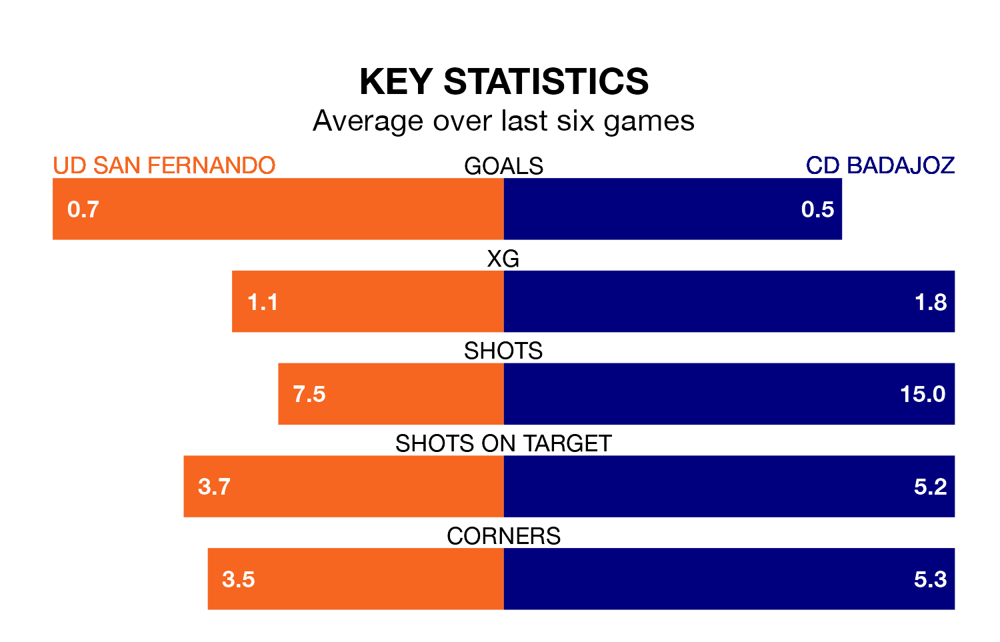

CD Badajoz travel looking to secure a first win in 11 Segunda División RFEF Group 5 games against UD San Fernando on Sunday lunchtime.
Badajoz have lost four and drawn six matches since they last earned three points – against CP Cacereño on November 12.
They face a San Fernando side who have won four and drawn three over that time.
Badajoz are 16th in the table after 21 games, of which they have won four and drawn nine, earning 21 points.
San Fernando are two places ahead of the away side in 14th, with six wins and five draws putting them on 23 points.
With 16 goals in 21 games so far this season, the hosts are the league's joint-second-lowest scorers with 0.8 goals per game. And they are conceding at an average rate, letting in 24 goals at a rate of 1.1 per game.
Badajoz are also below average scorers, with 0.9 goals per game, compared to a league average of 1.1. They have conceded 1.1 goals per game.
San Fernando's last match was on February 4, a 2-0 win against Guadalajara.
Badajoz drew 0-0 with Illescas last time out, also on Sunday.
Updated: 11:43 (UTC), 08/02/24